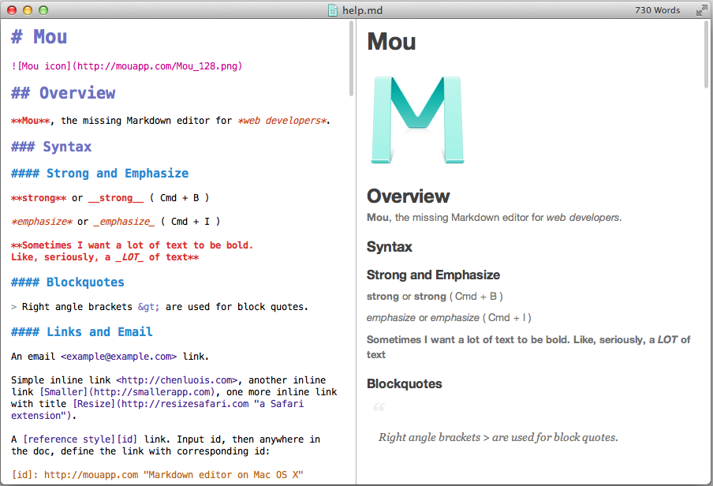

1
2
3
4
5
6
7
8
9
10
11
12
13
14
15
16
17
18
19
4.14 Синтаксис Markdown
Markdown — облегчённый язык разметки, который позволяет форматировать текст с помощью
простых и интуитивно понятных
символов. Создан в 2004 году Джоном Грубером и Аароном Шварцем
Особенность: текст, размеченный в Markdown, остаётся читаемым даже в исходном виде, без
преобразования в конечный формат
(например, HTML).

Синтаксис
Некоторые элементы форматирования в Markdown:
- Заголовки — создаются с помощью символа решётки (#). Количество символов определяет
уровень заголовка: от h1 (один
символ #) до h6 (шесть символов #).
- Маркированные списки — используются символы *, - или +.
- Нумерованные списки — создаются с помощью цифр, за которыми следует точка.
- Вложенные списки — для создания необходимо добавить отступ (обычно 2 или 4 пробела)
перед маркером дочернего элемента.
- Списки задач (чек-листы) — многие реализации Markdown поддерживают списки задач,
которые позволяют отмечать выполненные
пункты.
Применение
Markdown используется в разных областях, например:
- Программирование — создание README-файлов в репозиториях GitHub или GitLab, техническая
документация к программам и
библиотекам, оформление комментариев в системах контроля версий.
- README-файлы в репозиториях GitHub или GitLab, где описываются цели и функции проектов.
- Техническая документация к программам и библиотекам.
- Оформление комментариев в системах контроля версий.
- Авторы и редакторы контента — написание статей в платформах, поддерживающих Markdown,
заметки и черновики в текстовых
редакторах, поддерживающих Markdown.
- Блогеры используют Markdown для написания статей в таких платформах, как Ghost или Jekyll.
- Журналисты и копирайтеры пишут заметки и черновики в текстовых редакторах, поддерживающих
Markdown, например в Obsidian
или Notion.
Еще синтаксис используют для технических документов, так как Markdown позволяет структурировать
текст, включая списки,
таблицы и блоки кода. В таком виде документацию легко конвертировать в нужный формат.
- Преподаватели и студенты — создание презентаций и лекционных заметок, оформление
студенческих проектов и курсовых работ,
которые требуют структурированного текста.
- Создание презентаций и лекционных заметок.
- Оформление студенческих проектов и курсовых работ, которые требуют структурированного текста.
- Менеджеры проектов — форматирование чек-листов и списков дел, создание понятных
инструкций для команд.
- Форматировать чек-листы и списки дел.
- Создавать понятные инструкции для команд.
Как начать использовать Markdown?
Начать работу легко. Markdown разметка работает в любом текстовом редакторе, но для удобства можно
использовать
специальные приложения:
- Obsidian. Подходит для ведения заметок.
- Typora. Удобный текстовый редактор с поддержкой Markdown.
- Visual Studio Code. Популярный редактор кода, поддерживающий Markdown через плагины.
Заголовки
Заголовки в Markdown создаются с помощью символа решётки (#). Количество символов определяет уровень
заголовка: от h1 (один символ #) до h6 (шесть символов #).
# Заголовок h1
## Заголовок h2
### Заголовок h3
#### Заголовок h4
##### Заголовок h5
###### Заголовок h6
Абзацы и разрывы строк
Новый абзац в Markdown создается просто — нужно оставить пустую строку между блоками текста. Чтобы добавить
разрыв
строки внутри абзаца, достаточно поставить два пробела в конце строки.
Выделение текста
Markdown поддерживает несколько видов выделений, таких как жирный текст, курсив
и зачеркнутый текст. Это полезно для акцентов и выделения важной информации.
**Жирный текст**
*Курсивный текст*
~~Зачеркнутый текст~~
Списки
Markdown поддерживает два типа списков: упорядоченные (нумерованные) и неупорядоченные (маркированные).
Нумерованные
создаются с помощью цифр, а маркированные — символами - или *.
Пример:
1. Первый пункт
2. Второй пункт
- Элемент списка
- Другой элемент списка
Еще Markdown разметка подходит для создания интерактивных списков:
- [x] Выполнено
- [ ] Не выполнено
Ссылки и изображения
Markdown синтаксис позволяет легко добавлять ссылки и изображения в текст. Для создания ссылки используется
квадратные и
круглые скобки:
[Текст ссылки](https://example.com)
Изображения оформляются аналогично ссылкам, но перед текстом ссылки добавляется !:

Таблицы
Таблицы в Markdown создаются с использованием символа |, который разделяет столбцы. Для выравнивания
заголовков столбцов
применяются двоеточия.
| Заголовок 1 | Заголовок 2 |
|-------------|-------------|
| Ячейка 1 | Ячейка 2 |
| Ячейка 3 | Ячейка 4 |
Блоки кода
Чтобы вставить код, можно использовать тройные кавычки ```. Для подсветки синтаксиса укажите язык
программирования.
Пример:
```javascript
function greet() {
console.log("Hello, Markdown!");
}
Заключение
Маркдаун пригодится и тем, кто планирует карьеру в ИТ. Так, команда, которая работает над созданием и
отладкой ПО,
использует Markdown в README-файлах для описания проектов на GitHub или при написании технической
документации.
Проектные менеджеры часто структурируют заметки в Notion или Obsidian с помощью синтаксиса. Верстальщики же
создают
блоги на платформах, которые поддерживают Markdown, например на Jekyll.